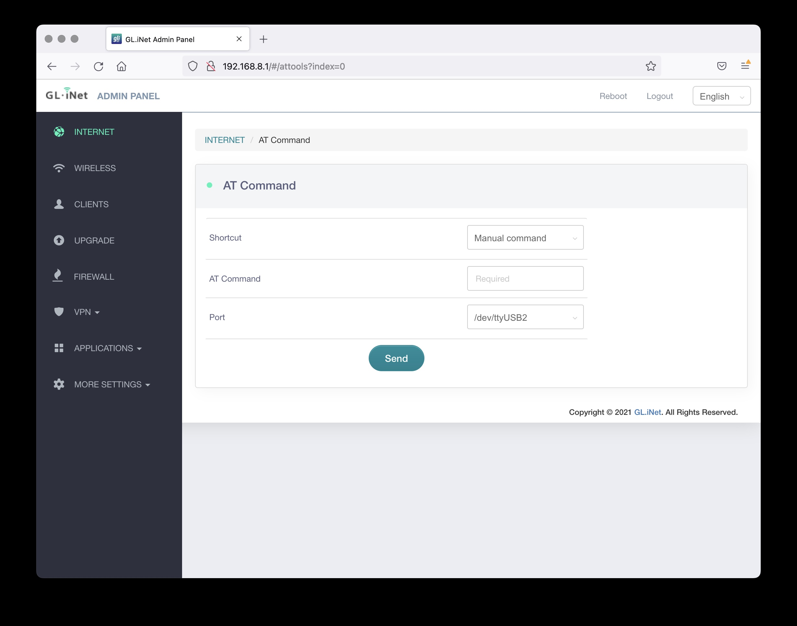

Locking LTE Bands
A Tutorial to Help You Lock Your Router to a Specific LTE Band
1. Access The Admin Panel
◦ Open a web browser (we recommend Chrome, firefox) and visit http://192.168.8.1. You will be directed to the login page of the web Admin Panel.
◦ Login to the admin panel with password "admin" (You can change this password later in settings).

2. The Admin Panel
◦ After you have logged in, you will see the web Admin Panel of your router. It allows you to check the status and manage the settings of the router.
◦ Navigate to the "AT Command" button and click it. (highlighted in red in the screenshot below).

3. AT Command Page
◦ Once you have navigated to the AT Command Page you will be able to begin configurating the LTE band you would like your device to lock to.
◦ By default, when you plug in the router, it is set to automatically select the network and LTE band with the best signal. Sometimes the best signal does not give you optimal speeds.

4. Manually Lock LTE Bands
◦ To manually lock your device to a specific band you can use the shortcut dropdown menu option "Set band"
◦ To specify what band you would like to lock to use the Band dropdown menu option.
◦ For example: We will select Band 2 and send the command.
◦ In some instances, it may be beneficial to have multiple bands locked so the router can automatically switch between them. Here are some common manual commands that can be used:
Bands: AT Commands:
2+4 AT+QCFG="band",0,a,1
2+4+5 AT+QCFG="band",0,1a,1
2+4+12 AT+QCFG="band",0,80a,1
2+4+5+12 AT+QCFG="band",0,81a,1
2+12 AT+QCFG="band",0,802,1
4+12 AT+QCFG="band",0,808,1
5+12 AT+QCFG="band",0,810,1
Reset to Default (All Bands) AT+QCFG="band",0,2000000003300185a,1
◦ Here is how to veiw the current band you are connected to: